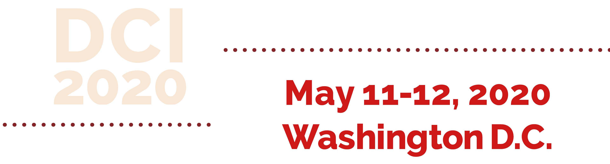

Day 1: May 11, 2020

01
Check-in
4:30pm - 5:50pm
Check-in and badge pick up will be held in the Bank of America Lower Lobby.
02
Opening Gala
7:00pm - 9:00pm
Business casual Mixer. Dinner will be catered by WestEndBistro. Seating is available in 'The Grand Lobby,' 'Richard's Place,' and 'The Molly Smith Study.'
Day 2: May 12, 2020
01
Building Unique Brands in the Digital Age
9:00am - 10:00am | Massimo Banzi & Pum Lefebure
Building a unique brand in the digital age requires a careful blend of creativity and technology. Although technology is often used to improve performance it is a useful tool in establishing a positive rapport with your audience. When used creatively and affectively it can help create powerful emotional connections with your audience. In this session Massimo and Pum will discuss the value of creating campaigns centered on human experiences through technology.
02
Design, Empathy & Storytelling
10:30am - 11:40am | Erika Hall & Roman Mars
Content is the fuel that powers design and when it comes together with authentic storytelling it can create a beautiful experience. However, when translated to the digital world this authenticity and empathy can be lost. With increasing social complexity how your narrative is delivered can significantly impact your brand. In this session we will explore how to design human-centered design systems based on conversation in tech-mediated interactions. Erika and Roman will break down the principles of conversational design to create authentic narratives.
03
Inclusivity and Accessibility in your Brand’s Design Systems
2:00pm - 2:45pm | Dana Chisnell & John Maeda
A good design is usable but a great design is effective and inclusive. Building a great design system requires going beyond the required to deliver an experience that is not only well designed but functional for a wide audience in real time. Unfortunately too often this is not the case. In this session Dana and John explore how civic and computational design can be used to improve your brand’s inclusive design systems.
04
Build A Better Brand: Experience Management
3:00pm - 4:00pm | Pum Lefebure & Tim Brown
In today’s society, having a great brand no longer means, delivering excellent services or products but rather wining the hearts of your audience in an oversaturated market. Through innovation and successful experience management you can deliver landmark experiences to your audience. In this session we will explore how to use the latest research to create better managed experiences. Tim and Pum will share how to improve design thinking to better understand and connect with your audience.
05
Build Engaging Experiences Through your Platform
4:00pm - 4:30pm | Massimo Banzi & Val Head
The platforms and systems we design today must connect with users through a variety of different screen-sizes, browsers, and interfaces. Through code structure, visual design, and other decisions we can create a unified experience that is seamless no matter where its viewed. When done right, the experience leaves users wanting to engage with your platform more. In this session Val and Massimo will address ways to build engaging themes that are cohesive across all platforms to create a more positive emotional impact on your audience.
06
Closing Reception
7:00pm - 9:45pm
Formal reception featuring closing remarks by a guest keynote speaker (TBD). Dinner will be catered by WestEndBistro. Seating is available in 'The Grand Lobby,' 'Richard's Place,' and 'The Molly Smith Study.'